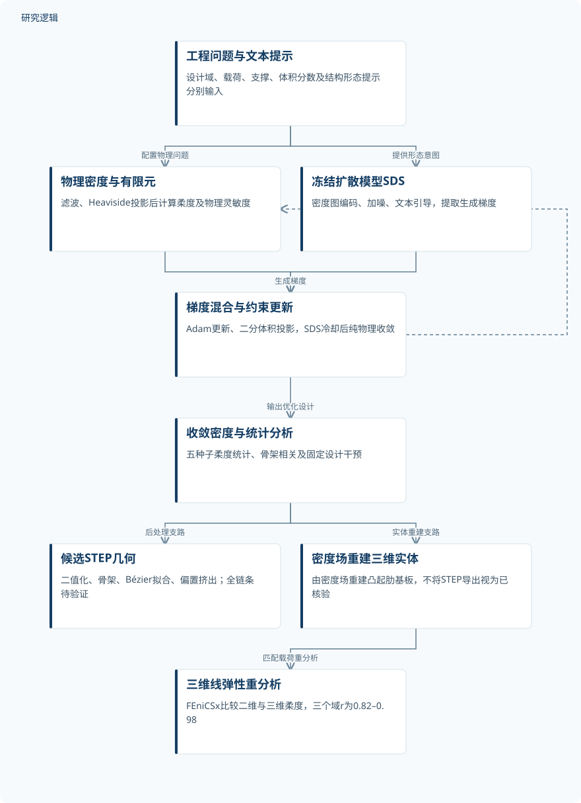
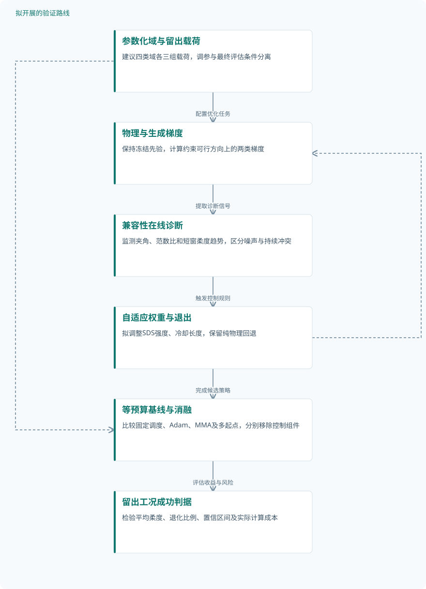

论文精读
零样本肋结构设计：融合免训练生成先验与拓扑优化
Zero-shot rib design: Merging a training-free generative prior with topology optimization
精读更新 2026-10-08 22:51 · 依据论文全文整理
树叶脉络、骨小梁和蛛网能够高效承载，但把这些形态写进提示词，并不意味着生成结构就符合工程力学。本文将冻结扩散模型的文本生成梯度嵌入拓扑优化，让有限元反馈持续筛选形态：245次主要运行中，38个提示词—域组合显著降低柔度。阅读价值不仅在于最佳改善幅度，更在于看清生成先验何时有效、为何失效，以及二维优化到三维肋结构之间尚未闭合的验证链。
文章目录
肋布局需要的不是更像自然，而是更有效承载
加强筋的数量、方向、间距和分支拓扑共同决定薄壁构件的材料效率。传统SIMP依靠密度灵敏度降低柔度，但惩罚插值带来非凸性，均匀初始化可能停留在局部拓扑；随机重启扩大搜索，却缺少结构化方向。
本文把自然语言定位为工程意图的表示，而不是边界条件的替代品。Tree、Leaf、Spiderweb等提示提供形态偏置，设计域、载荷、支撑和体积分数仍须分别配置；所谓零样本，是不需要任务专用训练，并非模型没有预训练。
冻结图像先验，逐步交还物理梯度主导权
优化最小化C=FᵀU，同时满足静力平衡与体积分数约束。三个板域使用Mindlin–Reissner理论和MITC4单元，连接件采用平面应力模型；板域零密度仍保留承载基板，不是空洞，肋存在与否对应的刚度按p=3插值。
物理密度复制为RGB并缩放至512×512，经Stable Diffusion 2.1的VAE编码后加噪，由冻结U-Net产生SDS梯度。它与有限元梯度原始加权相加，随后用Adam更新；作者明确承认，这一混合是启发式方法，并非单一标量目标的精确梯度。
每次更新后，二分投影精确满足体积约束，滤波和Heaviside投影控制密度形态。总计1000次迭代，前30次仅用物理梯度，SDS随后余弦冷却至约第530次退出，并采用时间步退火和EMA平滑；β从1逐步升至64，最终由物理优化完成二值化。
原研究：物理筛选生成形态，两条几何验证支路


STEP候选导出与密度场重建实体的三维重分析分开表示；后者不构成STEP完整链条验证。
下载 SVG图示关系说明
实线表示相邻阶段的信息流，虚线表示跨阶段联系或反馈。
工程问题与文本提示 → 物理密度与有限元：配置物理问题；工程问题与文本提示 → 冻结扩散模型SDS：提供形态意图；物理密度与有限元 → 梯度混合与约束更新：物理梯度；冻结扩散模型SDS → 梯度混合与约束更新：生成梯度；梯度混合与约束更新 → 物理密度与有限元：迭代反馈；梯度混合与约束更新 → 收敛密度与统计分析：输出优化设计；收敛密度与统计分析 → 候选STEP几何：后处理支路；收敛密度与统计分析 → 密度场重建三维实体：实体重建支路；密度场重建三维实体 → 三维线弹性重分析：匹配载荷重分析
245次是优化重复，不是245个独立零件
主要验证包含四个机械域的200次运行，以及三个板域热弹性设置的45次运行，共49个提示词—域组合，每组合五个种子。前三个机械域体积分数为0.20，连接件为0.30；数据来自作者构建的有限元工况，没有报告实体试件或数据增强数量。
研究不生成任务训练集，预训练来源被描述为LAION-5B，但模型实际预训练样本规模未给出。提示词与超参数先经独立单种子试运行选择，再进行五种子最终评估；这是选择与评估分离，不是监督学习的训练测试划分。
对照包括Adam-SIMP、每域50次多起点与50次周期扰动、固定图像引导及MMA。五运行子集重采样没有增加独立仿真，运行数匹配也不等于CPU/GPU成本匹配；调度消融仅用D_Rect的Spiderweb和seed=0，不能据此给出跨工况组件排名。
| 验证任务 | 样本与规模 | 主要结果 |
|---|---|---|
| 四机械域的提示比较与搜索基线验证 | 四域各10提示×5种子，共200次主要优化运行；三个板域另各有50次多起点和50次扰动运行。实体试件和增强数量未报告。 | 显著改善提示数依次为5/10、9/10、10/10、7/10。开孔板Spiderweb均值45.22±2.04，降低28.4%；最佳43.20，降低31.5%。 |
| 规定热弯矩下的热弹性泛化 | 三域×Spiderweb、Voronoi、Tree三提示×五种子，共45次主要运行；独立温度工况数、实体试件及增强数量未报告。 | 9组合中7个五种子全部改善，2个为4/5。各域最佳均值降低23.0%、13.9%、8.5%；权重100在所测四档中最优。 |
| 固定设计的死端与承载肋配对干预 | 共九个固定设计，每域三个种子，每设计实施三类干预；重新分析总次数、实体试件及统计不确定性未报告。 | 删除死端平均+5.9%，范围+0.6%至+12.1%；删除承载肋平均+61.5%，最大+182%；嫁接变化小于1%。 |
| 密度场重建凸起肋实体的三维重分析 | 各域表列n_prompts=10，相关计算包含基线；独立种子数、实体试件数、三维网格数量及增强数量未报告。 | 矩形、圆形、开孔域r分别为0.92、0.82、0.98；矩形域最优均为Spiderweb，另两域二维最优在三维中仍表现较强。 |
展开数据来源、分组、对照与验证边界
四机械域的提示比较与搜索基线验证
数据来源。作者构建D_Rect、D_Circle、D_Hole及汽车悬架连杆二维截面D_Link；参数表网格150×150，工业几何来源未报告。
分组与工况。矩形、圆形中心点载荷，开孔板四侧加载，以及连接件组合拉伸–剪切；板域V*=0.20，连接件V*=0.30。
数据划分。无需任务训练；提示与参数经独立单种子预运行选择，再以五种子评估。预运行总数及模型预训练划分未报告。
对照与消融。Adam-SIMP、多起点、周期扰动、固定图像均方误差引导；三个板域另比较单次确定性MMA，工业域无已报告MMA结果。
评价指标。柔度C=FᵀU、相对变化、五种子均值与标准差、单侧二项检验；柔度单位未报告，最佳运行比较另行报告。
验证边界。矩形域MMA为7.721，优于最佳SDS的7.886；等运行或等迭代不等计算预算。图像引导重复数、材料与完整几何尺度未报告。
规定热弯矩下的热弹性泛化
数据来源。三个板域由均匀厚度方向温度梯度产生规定热弯矩，采用MITC4分析；温差、热膨胀参数具体值未报告。
分组与工况。V*=0.20、初始SDS权重100；热载荷与设计无关。另在D_Rect的Spiderweb扫描权重10、50、100、200，各五种子。
数据划分。冻结生成模型，不进行任务训练；最终五种子评估与单种子选择阶段分开，独立温度条件留出方案未报告。
对照与消融。无SDS Adam/SIMP基线柔度为613.6、818.2、556.9；热弹性MMA对照未报告，权重扫描不应替代优化器比较。
评价指标。C=F_thᵀU及五种子均值±标准差、相对降低比例、胜出次数；柔度单位未报告，规定热载荷导数为零。
验证边界。仅适用于规定、密度无关热载荷，不能直接外推完整热耦合；权重扫描缺少离散统计，不能证明各提示和域均以100最优。
固定设计的死端与承载肋配对干预
数据来源。三个板域的优化设计及其骨架；追踪端点至最近分叉点，修改局部肋结构后，以原板有限元重新分析。
分组与工况。删除全部死端、删除最大应变能单根非死端肋、嫁接人工死端；保持周围拓扑及原边界条件不变。
数据划分。属于优化后配对力学核验，不涉及任务模型训练；设计选取与种子编号、独立留出规则未报告。
对照与消融。每个未修改设计作为自身基线，删除承载肋提供力学对照，嫁接死端检验新增低效分支的影响。
评价指标。相对原设计柔度变化及移除材料的应变能占比；作者用ΔC≈pf解释一阶影响，p=3，柔度单位未报告。
验证边界。删除死端仍有性能代价；干预后是否恢复等体积未报告，不能视作等材料重优化。没有该干预的三维或实物验证。
密度场重建凸起肋实体的三维重分析
数据来源。三个板域收敛密度场重建带肋基板，在FEniCSx进行三维线弹性分析；不是已验证的STEP全链条分析。
分组与工况。二维局部增刚Mindlin板与三维凸起肋实体采用匹配载荷、支撑；基板厚度1、肋高5，长度单位未报告。
数据划分。同一设计跨模型重分析，不涉及任务训练；用于相关性计算的种子选择及独立验证划分未报告。
对照与消融。对应域SIMP-only设计，以及同一提示设计的二维分析；比较归一化柔度与最优提示的保持情况。
评价指标。二维、三维柔度Pearson相关系数及提示表现排序；线性相关并非模型等价或完整排序一致性指标。
验证边界。完整density–binary–STEP的质量、体积分数和变形场比较仍属未来工作；没有实体制造验证，绝对几何单位等信息缺失。
改善来自探索，但不能承诺普遍胜过强基线
49个组合中38个达到五种子全部优于基线，单侧二项检验p=0.031，经Benjamini–Hochberg校正仍满足q<0.05。机械最大降低31.5%是D_Hole的最佳单次结果，热弹性23.0%是D_Rect的五种子均值；最佳值与平均收益不能混用，且D_Rect的最佳SDS仍落后于MMA。
端点数与柔度跨六设置正相关，但热弹性D_Rect改善时端点反而增多，死端抑制并非普遍规律。九个固定设计的干预提供更直接证据：删除死端平均增加柔度5.9%，删除承载肋增加61.5%；它说明死端贡献较小，不说明事后剪枝必然改善。
灰密度比例由42.6%降至2.5%，但判定阈值和重复数缺失。由密度场重建的三维实体与二维柔度相关系数为0.82–0.98，并不等于STEP全链条已验证；热传导负结果及失配提示退化进一步限定适用范围，代码也仅承诺合理请求下提供。
从这篇论文走向下一项研究
以下为结合研究方向提出的候选方案，实验设计与预期目标有待验证。
用载荷路径兼容性控制SDS，而非固定经验权重
问题与短板。提示排名跨域反转，固定权重又随柔度尺度手动调整，现有单种子消融不足以识别稳定策略。建议优先解决生成梯度何时帮助探索、何时阻碍承载的问题，而不是继续扩充提示词清单。
改进机制。拟根据体积约束可行方向上的梯度夹角、范数比及短窗柔度变化，在线调整SDS权重；持续冲突时缩短冷却或关闭引导。必须保留最终纯物理阶段，避免把语义一致性当成力学成功。
候选创新。候选创新是将载荷路径兼容性、尺度归一化与退出规则组合成可审计控制器，替代逐域经验定权。这是针对本文的拟议组合；已检索REPA-P摘要采用训练期物理表征对齐，与此冻结模型在线控制不同。
数据与实验设计。建议设计采用可自行构建并公开的四类参数化域，每类三组载荷位置，每工况十个最终种子；另设不重叠载荷条件调参。预训练模型可公开获取，论文代码需申请，不能假定已有可复现实验包。
对照与消融。比较原始固定调度、无SDS的Adam及MMA、多起点和自适应策略，统一墙钟预算并披露硬件。分别移除夹角判据、范数归一化、提前退出，采用匹配随机种子测量组件及其交互。
成功判据。预先规定以留出工况的平均柔度和退化运行比例为主判据，同时报告置信区间、校正后的显著性及计算成本。只有降低失配退化且不牺牲匹配工况收益，才支持控制器有效。
风险与替代方案。梯度夹角可能受噪声及约束投影影响，局部冲突也可能是必要探索。若即时判据误杀有效先验，可改用短窗累计趋势和迟滞阈值；若收益仍不稳定，则保留纯物理回退并缩小适用范围。
闭合密度、STEP与实体性能的等质量验证链
问题与短板。二维与三维柔度正相关尚未说明Bézier拟合、宽度平均和挤出后的性能损失，完整转换链仍未验证。建议把等质量与真实肋截面作为核心条件，区分优化收益、几何转换误差和制造偏差。
改进机制。拟在骨架拟合与偏置阶段加入体积校正、曲率和最小宽度约束，再对导出STEP重新网格化。通过逐级比较质量、柔度、变形场和局部应力，将误差定位到二值化、曲线拟合或实体建模环节。
候选创新。候选创新是把生成先验探索与转换链的可追踪误差预算连接起来，而非另提一种STEP导出工具。本文已有骨架和曲线流程及实体重分析，拟议工作补充的是逐级等质量核验与性能反馈。
数据与实验设计。建议设计先在三个可公开构建板域各选五个种子，保留SIMP和SDS配对设计，再记录四级几何。若具备加工与测试条件，可另采集每方法三件重复试件；这些是建议数量，不是已有实验资源。
对照与消融。比较原后处理、体积校正、几何约束及联合方案，三维分析统一材料、载荷、支撑与网格收敛标准。实物阶段按实际质量配对，并消融曲率限制、宽度修正和性能反馈，避免把增重当增刚。
成功判据。建议预注册转换后体积误差不超过2%、柔度相对重建实体增加不超过5%的验收阈值，另报告排序保持率和应力变化。实测若可开展，应以重复性和仿真误差共同判断，而非只展示成功零件。
风险与替代方案。圆角、连接节点和制造缺陷可能主导误差，过强几何约束也会抹去优化优势。若暂不能制造，可先完成公开STEP与收敛三维仿真的闭环；若转换损失过大，再引入局部重优化而非声称可制造。
拟议路线：载荷兼容性驱动的SDS在线控制


对应第一条研究建议；控制规则及预期收益尚未验证，需通过留出工况和等预算比较检验。
下载 SVG图示关系说明
实线表示相邻阶段的信息流，虚线表示跨阶段联系或反馈。
参数化域与留出载荷 → 物理与生成梯度：配置优化任务；物理与生成梯度 → 兼容性在线诊断：提取诊断信号；兼容性在线诊断 → 自适应权重与退出：触发控制规则；自适应权重与退出 → 物理与生成梯度：反馈下一轮权重；自适应权重与退出 → 等预算基线与消融：完成候选策略；参数化域与留出载荷 → 等预算基线与消融：统一工况与种子；等预算基线与消融 → 留出工况成功判据：评估收益与风险